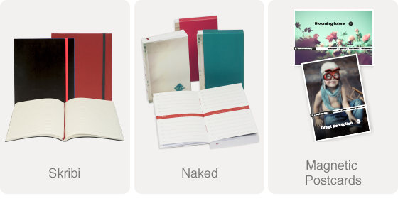

Personalize
Communicatie is broodnodig in zaken doen, dat beseffen we allemaal. Maar we worden helaas overspoeld met informatie en het is een uitdaging om gelezen te worden. Zelfs al is de uitwerking origineel, dan nog blijft het knokken om aandacht. Die kan je krijgen door uw drukwerk te personaliseren. Of het nu de covers van 30 agenda’s zijn of de omslag van 20.000 Dataline magazines: gepersonaliseerd trekken ze de aandacht en uw boodschap komt over.
We innovate for you!
Books on demand / Wire-O in house / Personalization / Responsive Websites / Android and iOS Apps - no further comments / when questions: let us know!
Our key to success!
Lannoo blijft staan voor een ongeëvenaarde drukkwaliteit dankzij ons eigen concentrisch raster dat tal van voordelen biedt tegenover het conventioneel raster. Het kwaliteitsverschil in de kleurnuances is merkbaar beter en geeft uw drukwerk een hogere kwaliteit. Uw kwaliteitsproduct verdient een kwaliteitsvolle benadering om het verschil te maken met uw concurrenten.
Small quantity, Large quality!
Onze paper products-lijn biedt een waaier aan kwalitatief hoogstaande producten van de klassieke Skribi-notebook met lederen kaft tot de nakedcollectie, agenda’s en notebooks.
Al deze producten kunnen in kleine oplages gepersonaliseerd worden naar uw wensen: notebooks, onderleggers, agenda’s, magnetische postkaarten,…
Personalise! And free yourself from anonimity!
Catalogus Lannoo paperproducts: Small quantity & Large quantity!
Wilt u deze nieuwsbrief niet meer ontvangen? Klik dan